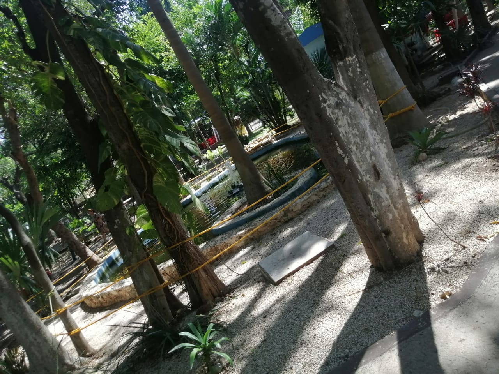
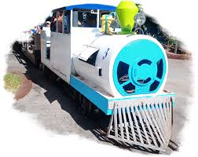

El Parque Zoológico del Centenario, conocido como "El Centenario", es un emblemático espacio recreativo en Mérida, Yucatán, con una rica historia que data de principios del siglo XX.
Inicios como jardín botánico (1910):
La construcción del parque comenzó a principios de 1910, inicialmente bajo la denominación de "Parque y jardín botánico".
Esta obra formaba parte de las medidas de salubridad y saneamiento de la ciudad durante el porfiriato, época en la que se promovía la creación de parques y jardines para embellecer las ciudades y proporcionar espacios de recreación.
Se importaron 200 bancas y un kiosco para el jardín botánico, que rápidamente se convirtió en un lugar popular entre los habitantes de Mérida.

Inauguración y primeras décadas:
El parque fue inaugurado el 18 de septiembre de 1910 por el gobernador Enrique Muñoz Aristegui, en el marco de las celebraciones del centenario de la Independencia de México.
Durante la ceremonia, se develó una fuente de mármol donada por la colonia cubana, la cual aún se conserva en el parque.

En sus primeros años, el parque contaba con una alameda con quiosco y bancas importadas, un lago para practicar natación y remo, y su pórtico, por el cual pasaban los carruajes.
Transformación en zoológico (1962):
En 1962, el parque fue objeto de una importante remodelación, convirtiéndose en zoológico.
Esta transformación respondió a la necesidad de ofrecer a la población un espacio donde pudieran conocer y apreciar diversas especies animales.
Treinta años después, se construyó un aviario para enriquecer la experiencia de los visitantes.

Expansión y modernización:
A lo largo de los años, el parque ha experimentado diversas mejoras y expansiones. Cuenta con áreas temáticas que incluyen un jardín botánico, zonas de juegos, restaurantes, una fuente de la paz, una pérgola, un kiosco, un acuario, la torre EducaZoo y juegos mecánicos. Además, posee un lago artificial, servicios de trenecito y teleférico. La sección del zoológico alberga un aviario de 2,500 metros cuadrados, un herpetario de 200 metros cuadrados, una zona de primates al aire libre de 400 metros cuadrados y una zona de mamíferos.
Actualidad:
En 2024, el Parque Zoológico del Centenario celebró su 114º aniversario, consolidándose como uno de los parques más antiguos y queridos de México. Recibe alrededor de 1,200,000 visitantes al año, superando en afluencia a zonas arqueológicas como Uxmal, Ek Balam y Dzibilchaltún.
El parque continúa siendo un espacio de esparcimiento y educación para locales y turistas, ofreciendo una combinación de historia, naturaleza y entretenimiento.